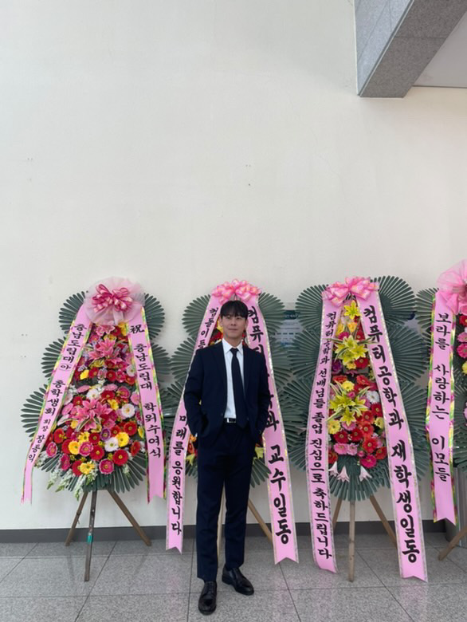
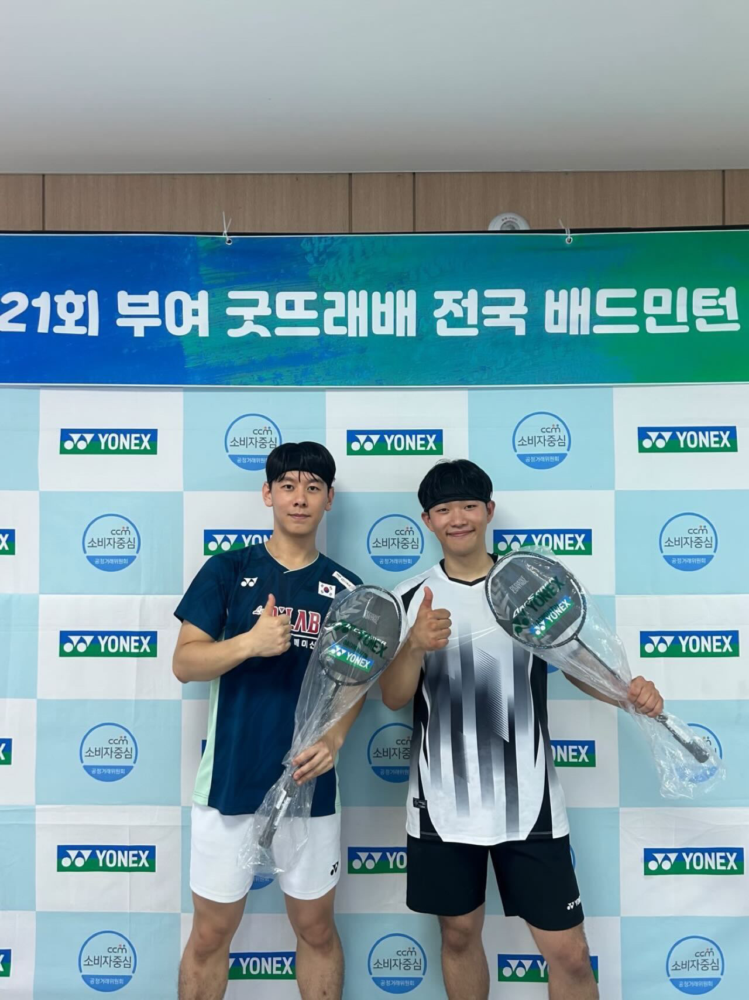
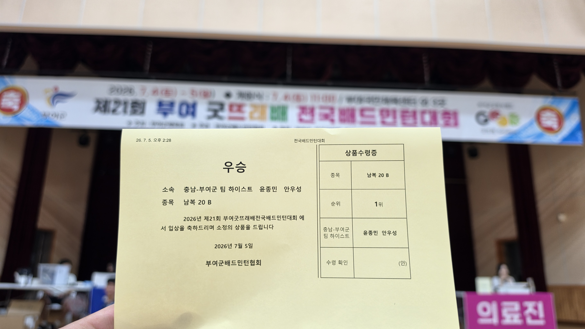
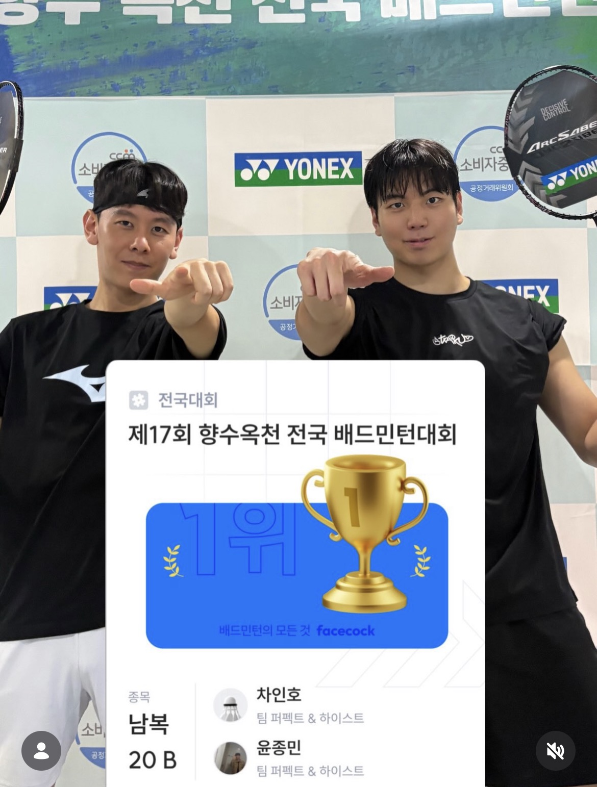
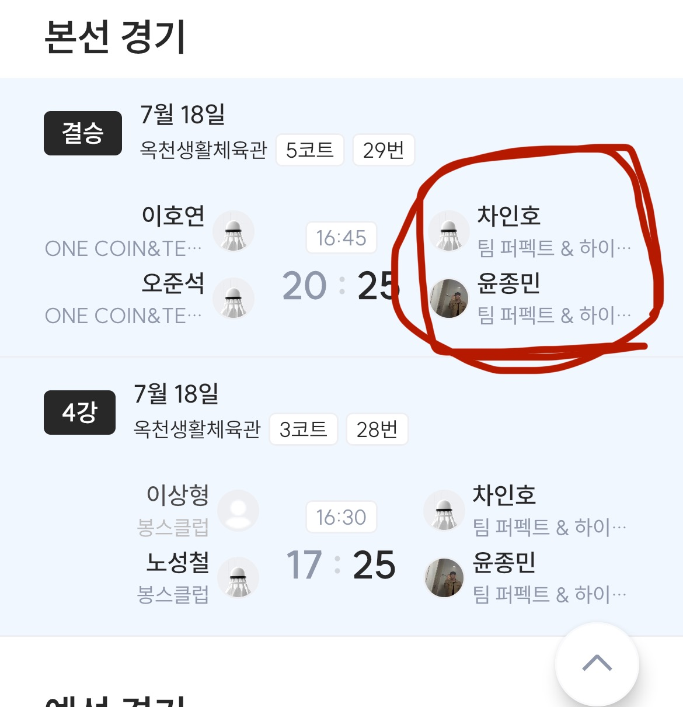
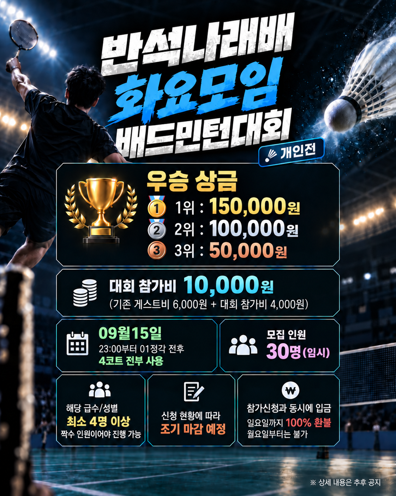

Challenge & Learning
새로운 것을 배우는 데 두려움이 없습니다. 6개월간 풀스택 개발 과정을 경험했고, 현재는 네트워크 관리, 데이터베이스, 리눅스 서버를 공부하고 있습니다.
학습 기록 보기 ↗HELLO, I'M YOON JONGMIN
새로운 것을 배우는 데 두려움 없이 도전하고, 더 나아지기 위한 환경을 직접 만들며, 함께 결과를 만드는 과정에서 책임을 다합니다.

ABOUT ME
개발, 공부, 운동, 모임 운영은 서로 다른 활동처럼 보이지만 그 안에서 중요하게 생각하는 태도는 비슷합니다.
새로운 것을 배우는 데 두려움이 없습니다. 6개월간 풀스택 개발 과정을 경험했고, 현재는 네트워크 관리, 데이터베이스, 리눅스 서버를 공부하고 있습니다.
학습 기록 보기 ↗더 나아지고 싶다면 좋은 환경이 생기기를 기다리기보다 직접 만들려고 합니다. 배드민턴 실력을 높이기 위해 직접 운동 모임을 만들어 운영하고 있습니다.
배드민턴 복식, 모임 운영, 개발 팀 프로젝트에서 사람들과 역할을 맞추고 함께 결과를 만드는 과정을 중요하게 생각합니다. 맡은 일은 끝까지 책임지려고 합니다.
EXPERIENCE
DEVELOPMENT
새로운 기술을 사용해야 하는 팀 프로젝트에서 필요한 내용을 직접 학습하고 맡은 기능을 구현하면서 팀원들과 하나의 결과물을 완성했습니다.
BADMINTON
상급자들과 꾸준히 연습할 수 있는 환경이 필요하다고 생각해 2025년 9월부터 배드민턴 모임을 만들어 꾸준히 운동하고 있습니다.
2026 남자복식 전국대회
우승 5회 · 준우승 1회 · 3위 1회
COMMUNITY
처음에는 마음이 맞는 소수 인원으로 시작했지만 꾸준히 운영하면서 현재 약 50명 규모의 배드민턴 모임으로 성장했습니다.
2025년 9월 모임 개설 이후 매주 화요일 정기적으로 운영하고 있습니다.
EVIDENCE
결과물뿐 아니라 배우고 성장한 과정도 공개 가능한 범위 안에서 확인할 수 있도록 했습니다.
DEVELOPMENT
팀 프로젝트의 구현 내용과 개발 과정을 GitHub README에서 확인할 수 있습니다.
GitHub README ↗LEARNING ARCHIVE
풀스택 개발 과정부터 네트워크 관리, Linux 서버, Database까지 직접 공부한 내용을 꾸준히 기록하고 있습니다.
Velog 학습 기록 ↗BADMINTON
꾸준한 훈련과 복식 파트너와의 협업을 통해 2026년 우승 5회, 준우승 1회, 3위 1회를 기록했습니다.
Men's Doubles
우승

Men's Doubles
우승

COMMUNITY
2025년 9월부터 매주 화요일 모임을 운영하고 있으며 현재 약 50명 규모로 성장했습니다.
회비 관리, 참가자 모집, 체육관 대관, 게임 매칭과 마감까지 직접 담당하고 있습니다.
모임에서 모은 회비를 활용해 구성원들을 위한 자체 배드민턴 대회도 직접 기획하고 있습니다.

위 소개 내용은 누구나 볼 수 있습니다. 아래 세 가지 가상 메모는 내 패스키로 로그인한 뒤에만 서버에서 받아옵니다. 실제 연락처나 신분증 정보는 넣지 않았습니다.
비밀번호는 사용하지 않습니다. 등록을 취소하면 아무것도 저장되지 않습니다.